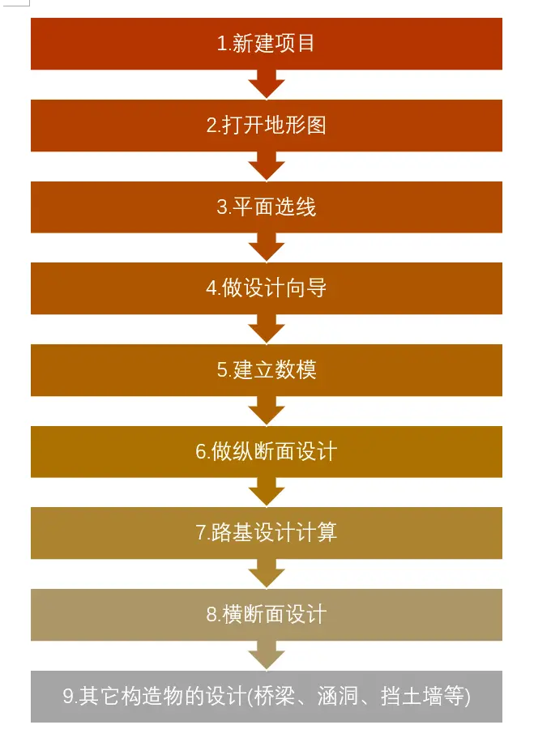

设计总流程
我的讲解习惯是先讲整个完整流程的步骤，然后我再详细讲讲每个步骤的详细过程，这样你在听课的时候有个方向，哦这里讲的是纵断面设计，那么之前应该是做数模，唉？数模是什么？喔，原来是这一步漏掉了，我回去翻翻……
这样我在介绍一些具体功能的时候，你或多或少能够知道我在给你解释什么，不然一上来就给你说这个功能又什么用，那个功能能实现什么，这个不是我们关心的，那是开发者要关心的，我们关心的是怎么用。
步骤看起来很多，其实没有那么多。本来就只有平面设计、纵断面设计、横断面设计、其它构造设计。
不过呢平面设计和纵断面设计中间需要做设计向导、建立数模这样的过渡操作，很多同学会忘记，导致各种报错。
所以我就把这些过渡的步骤单独写出来，以防忘记，方便复习。
如下图所示，依次进行。

这些步骤的先后顺序不能乱。如果修改了其中某个环节，那么就要从那个环节开始，往下走完流程。
如果你在建立数模之前没有做设计向导，那么一些数据就无法计算进去，后续的设计也当然会出错（设计向导里面需要填入的是纵断面和横断面的一些数据，以供后续计算使用）；
如果你没有做平面选线而妄想做桥梁涵洞的设计，于情于理都是说不过去的（毕竟你路都没有，桥该放哪？）；
如果你重新修改了纵断面设计之后，没有重新点击路基设计计算，那么你横断面出图的数据是另外一条纵断面的设计。(路基设计计算根据你的平面路线和拉坡的数据，计算出每个桩号的横断面数据)
我这样说你可能暂时不理解，那也没关系，我这里只是想强调，要严格按上图顺序来做。这一点，记住即可。
如果是初次学习，讲第二步平面选线的时候，通常老师们就要开始讲各种选线要注意的事项，缓和曲线该如何设置，这个房子该不该拆，突然又讲了一个自己在实际工程遇到的什么特殊例子，然后又突然讲了一个段子，然后……等等。
不过我并不打算讲，我想先讲纬地是怎么个操作的，在整个平面设计中，需要点击哪些功能按钮。你知道操作之后，熟悉这个操作，然后再考虑规范，再考虑设计。
咳咳，好像废话有点多，不过我说了那么多，就只是希望大家能了解到我的思路，我认为这个总步骤应该一开始就要讲清楚，学生课后没事的时候，可以自己往下尝试操作软件，而不是非得老师来教才能进行。
所以这一章的目的就是，了解整个流程，学完本课程之后，最好能完全记住这个流程。学习的时候，最好不停的翻看，看看自己走到这段路程的什么位置了。当然，还有很多细节没有讲，初学的话不要勉强自己一定要看出点什么**，就算什么也看不出来也是正常的，这个东西是需要反复翻阅、反复熟悉理解，直到你拥有了自己的理解。你知道每一个都在干什么，**这时候你已经出师了。
而且我在前言说了，这本书可能会持续修改更新，发出来的东西我当然保证正确性，不过就是可能不太完整，就比如这一章，可能需要更多的详细解释，或者根本不需要。这都是有可能的，所以需要可以动态修改的地方，那就是程序员都喜欢用到的代码托管网站比如 github、gitee 之类的仓库托管，很多写作的也都喜欢在上面写文字更新。后面我会教大家怎么参与到这本书的写作中来，一起补充这部书。在完结的时候，我会打包成 PDF，以供下载。
我现在直接更新出来，是怕我写到一半就放弃了。只有先给自己挖个坑，然后往里面跳，才可能填完。我一开始一直等，说我写完这本书再全部更新出来，结果到现在一个字都没动……所以我放弃了完美，是驴子是骆驼，拉出来溜溜先